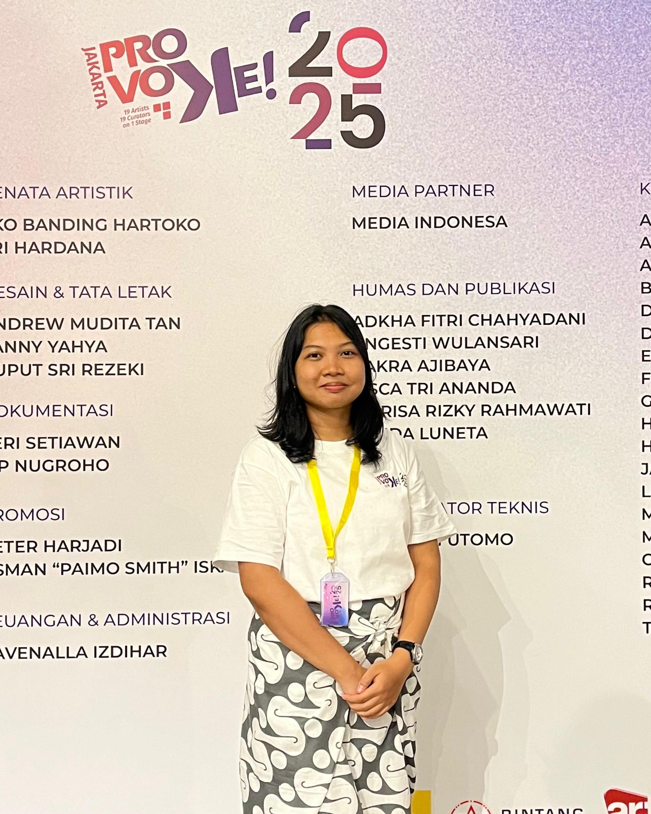
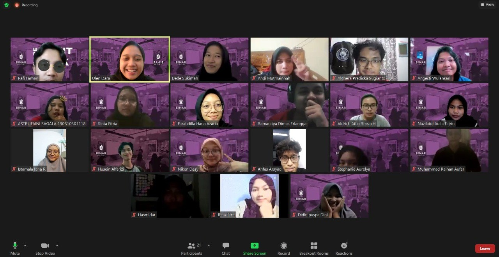
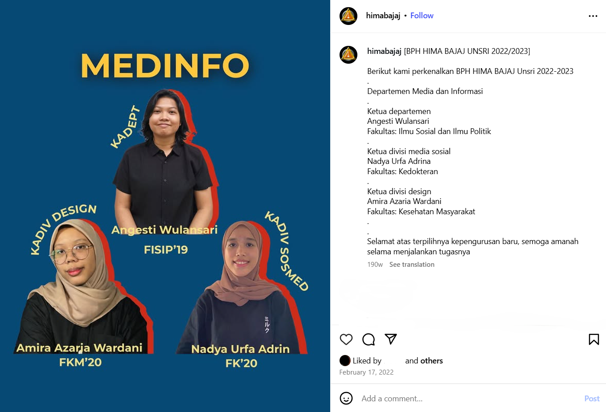
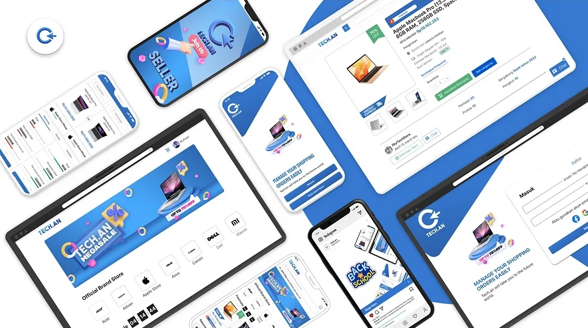
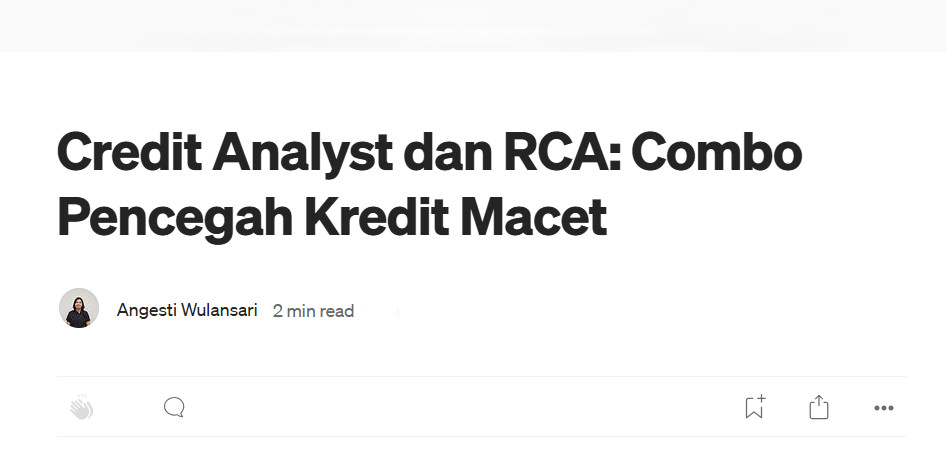
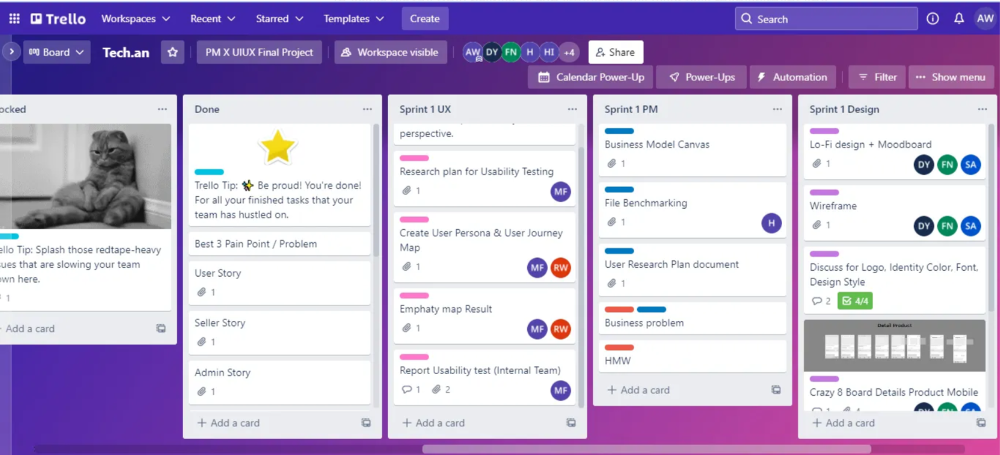
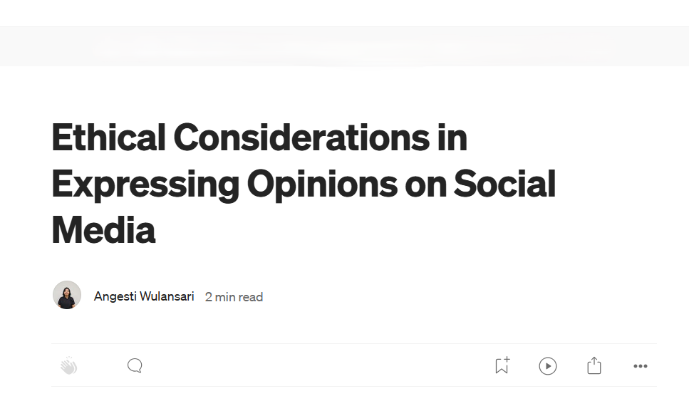

hi! my name is
about
Aku lulusan
Ilmu Komunikasi di
Universitas Sriwijaya
aku tertarik dengan
Kolaborasi lintas Tim
Komunikasi dan Hubungan dengan Klien
Analisis Pasar dan Tren Kompetitor
Penilaian Risiko Kredit
Pemahaman Produk
Analisis Laporan Keuangan
experience
work
project

Buana Finance
Credit Analyst (2024-2025)

Jakarta Provoke! 2025
Kru Panggung Junior (2025)

Binar Academy
Product Management Mentee (2022)

HIMA Bajaj
Kepala Departemen Media dan Informasi (2022-2023)

Dinamika Komunikasi Pada Proses Pengambilan Keputusan Tim Lintas Fungsi di Binar Academy
2023

Tech.an
2022

Artikel CA
2025

Artikel PM
2022
